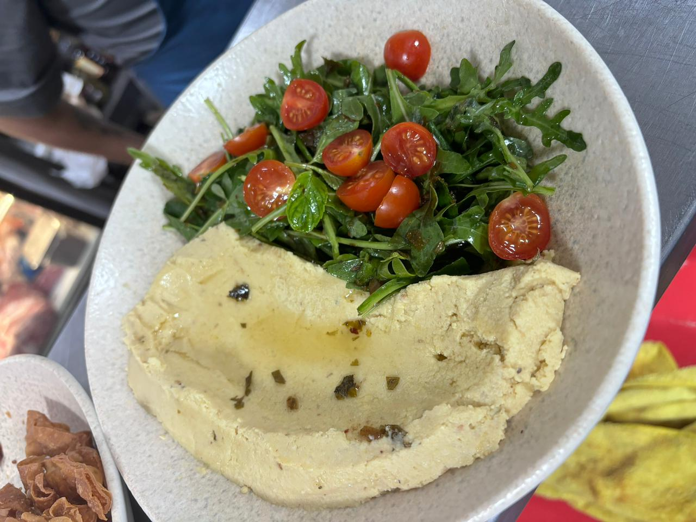

Humus

El hummus es un dip cremoso hecho con garbanzos, tahini, ajo, jugo de limón y especias. Se sirve con un chorrito de aceite de oliva y pimentón. Es ideal para untar con pan o vegetales frescos.
- 1 lata de garbanzos (aproximadamente 400g), escurridos y enjuagados
- 3 cucharadas de tahini (pasta de sésamo)
- 2 dientes de ajo, pelados y picados
- 3 cucharadas de jugo de limón fresco
- cucharadas de aceite de oliva virgen extra
- 1/2 cucharadita de comino molido
- Sal al gusto
- Agua (opcional, para ajustar la consistencia)
- Pimentón dulce o paprika, para decorar
- Perejil fresco picado, para decorar (opcional)
Procedimiento
- Enjuaga los garbanzos bajo agua corriente para quitar el exceso de sal y conservantes. Es importante escurrirlos bien.
- En un procesador de alimentos, coloca los garbanzos escurridos, el tahini, el ajo picado, el jugo de limón, el aceite de oliva, el comino y una pizca de sal.
- Procesa la mezcla hasta obtener una pasta suave y cremosa. Si es necesario, puedes agregar un poco de agua para alcanzar la consistencia deseada. Añade el agua gradualmente para evitar que el hummus quede demasiado líquido.
- Prueba y ajusta el sabor agregando más sal o jugo de limón si es necesario.
- Una vez que la mezcla tenga la consistencia y el sabor deseados, transfiérela a un plato de servir.
- Haz un pequeño hueco en el centro del hummus con una cuchara y rocía un poco de aceite de oliva virgen extra en la parte superior.
- Espolvorea con un poco de pimentón dulce o paprika para darle un toque de color y sabor.
- Opcionalmente, decora con un poco de perejil fresco picado.
- Sirve el hummus con pan de pita, galletas saladas, o vegetales crudos como zanahorias, apio, pepinos, etc.
Home